Trois entrepreneurs, trois obligations différentes
Pour bien comprendre à qui s'applique SYSCOHADA et comment, partons de trois cas concrets.
Boutique de pagne, Bamako (Mali)
Transit portuaire, Abidjan (Côte d'Ivoire)
Holding multi-filiales, Dakar (Sénégal)
- Awa, à Bamako (Mali). Boutique de pagne au Grand Marché de Bamako. Chiffre d'affaires estimé à 8 millions FCFA par an. Pas de salarié, elle gère seule.
- Sokoura Transit, à Abidjan (Côte d'Ivoire). PME de transit et de logistique portuaire. Chiffre d'affaires de 200 millions FCFA par an, 12 salariés.
- Groupe Diallo, à Dakar (Sénégal). Holding qui regroupe trois filiales (BTP, immobilier, distribution). Chiffre d'affaires consolidé de 4 milliards FCFA, 110 salariés.
Ces trois entreprises exercent une activité économique, donc elles sont toutes les trois soumises à SYSCOHADA. Mais elles ne sont pas soumises aux mêmes obligations : Awa relève du Système Minimal de Trésorerie, Sokoura Transit du Système Normal, et Groupe Diallo doit en plus produire des comptes consolidés. On va voir précisément pourquoi.
OHADA, c'est quoi exactement ?
OHADA est l'acronyme d'Organisation pour l'Harmonisation en Afrique du Droit des Affaires. C'est une organisation intergouvernementale créée en 1993 par le traité de Port-Louis (Île Maurice). Son objectif : harmoniser le droit des affaires dans les pays membres pour faciliter le commerce, les investissements, et la libre circulation des entreprises.
Aujourd'hui, OHADA regroupe 17 pays, principalement d'Afrique de l'Ouest et centrale.

Les 17 pays OHADA : Bénin, Burkina Faso, Cameroun, Centrafrique, Comores, Congo, Côte d'Ivoire, Gabon, Guinée, Guinée-Bissau, Guinée équatoriale, Mali, Niger, République Démocratique du Congo, Sénégal, Tchad, Togo.
Soit environ 250 millions d'habitants et 13 % du PIB africain.
OHADA produit ce qu'on appelle des Actes uniformes, qui s'appliquent directement dans tous les pays membres, sans qu'il soit besoin pour chaque pays de voter une loi nationale. Chacun encadre un domaine précis du droit des affaires.
OHADA, ce n'est pas que la comptabilité
L'erreur fréquente consiste à croire qu'OHADA = comptabilité. En réalité, la comptabilité n'est qu'un des domaines harmonisés par OHADA. À ce jour, une dizaine d'Actes uniformes sont en vigueur. En voici la liste, de la plus récente à la plus ancienne (source : ohada.com).
| Acte uniforme | Année | Domaine |
|---|---|---|
| AUPSRVE | 2023 | Procédures simplifiées de recouvrement et voies d'exécution |
| SYCEBNL | 2022 | Système comptable des entités à but non lucratif |
| AUDCIF | 2017 | Droit comptable et information financière (entreprises) |
| AUA | 2017 | Arbitrage |
| AUM | 2017 | Médiation |
| AUPCAP | 2015 | Procédures collectives d'apurement du passif (faillite, redressement, liquidation) |
| AUSCGIE | 2014 | Sociétés commerciales et groupements d'intérêt économique |
| AUS | 2010 | Sûretés (garanties, gages, hypothèques, cautions) |
| AUSCOOP | 2010 | Sociétés coopératives |
| AUDCG | 2010 | Droit commercial général (commerçant, fonds de commerce, bail commercial) |
| AUCTMR | 2003 | Contrats de transport de marchandises par route |
Chacun de ces textes a un usage concret pour une entreprise OHADA :
- Quand tu crées une SARL ou une SA, c'est l'AUSCGIE qui te dit comment.
- Quand un fournisseur ne te paye pas et que tu veux saisir son compte bancaire, c'est l'AUPSRVE qui ouvre la voie.
- Quand ton entreprise traverse une mauvaise passe et doit déposer le bilan, c'est l'AUPCAP qui organise la procédure.
- Quand tu donnes une hypothèque ou que tu te portes caution pour un crédit, c'est l'AUS qui régit le tout.
Pour la tenue de la comptabilité d'une entreprise, l'Acte qui s'applique est l'AUDCIF : « Acte uniforme relatif au droit comptable et à l'information financière », adopté le 26 janvier 2017 et entré en vigueur le 1er janvier 2018. Il a remplacé l'ancien Acte uniforme portant organisation et harmonisation des comptabilités des entreprises de 2000.
Note : les associations et ONG ont leur propre Acte uniforme, le SYCEBNL, adopté en décembre 2022 et applicable depuis le 1er janvier 2024. Si tu gères une OSBL, ne te trompe pas de référentiel.
SYSCOHADA et AUDCIF : la mécanique du langage comptable commun
Maintenant que la place de la comptabilité dans le paysage OHADA est claire, voici la distinction utile entre les deux sigles que tu vas voir partout :
- AUDCIF : le texte juridique, l'Acte uniforme qui pose les règles comptables OHADA. C'est la loi.
- SYSCOHADA : le système comptable qui en découle. C'est l'application concrète des règles : plan comptable, méthodes d'enregistrement, formats des états financiers.
On parle souvent du « SYSCOHADA révisé 2017 » ou du « SYSCOHADA 2017 » pour le distinguer de la version précédente, en vigueur depuis 2001 sous l'ancien Acte comptable.
Concrètement, SYSCOHADA définit quatre choses essentielles :
- Un plan comptable général en 9 classes (de 1 à 9), avec une nomenclature précise des comptes
- Les principes comptables à respecter : continuité d'exploitation, prudence, permanence des méthodes, indépendance des exercices, etc.
- Les modalités d'enregistrement des opérations selon le mécanisme de la partie double
- Le format et le contenu des états financiers à produire en fin d'exercice
L'idée centrale est qu'une entreprise sénégalaise et une entreprise malienne produisent leurs comptes dans le même format, selon les mêmes règles. Un banquier ivoirien qui regarde un bilan congolais retrouve les mêmes rubriques au même endroit. C'est la grande force du système.
Système Normal ou Système Minimal de Trésorerie ?
SYSCOHADA prévoit deux régimes de tenue comptable, selon la taille de l'entreprise.
Le Système Normal (SN)
C'est le régime de droit commun, celui qui s'applique par défaut à toutes les entreprises qui dépassent les seuils du Système Minimal de Trésorerie.
Ce qu'il impose :
- Comptabilité d'engagement complète (on enregistre les opérations dès qu'elles naissent, pas seulement quand l'argent bouge)
- Tenue d'un journal général, d'un grand livre et d'une balance
- Production d'un jeu complet d'états financiers : bilan, compte de résultat, tableau des flux de trésorerie, notes annexes
- Tous les principes comptables OHADA s'appliquent (provisions, amortissements, dépréciations, etc.)
C'est le régime de Sokoura Transit à Abidjan, et de la plupart des PME formelles en zone OHADA.
Le Système Minimal de Trésorerie (SMT)
C'est un régime allégé, réservé aux très petites entreprises. Il a été conçu pour ne pas écraser les petits commerçants et artisans sous la complexité d'une compta d'engagement complète.
Ce qu'il impose :
- Une comptabilité de trésorerie, c'est-à-dire qu'on enregistre les opérations au moment où l'argent entre ou sort, pas au moment où l'engagement naît
- Un livre de recettes et un livre de dépenses
- Un état des stocks, des créances et des dettes en fin d'exercice
- Un compte de résultat simplifié et une situation patrimoniale
C'est plus simple, mais ça ne donne pas une vision aussi fine de la performance économique. C'est le régime applicable à la boutique d'Awa.
Les seuils qui font la différence
L'article 13 de l'AUDCIF fixe les seuils annuels en deçà desquels une entreprise peut opter pour le SMT. Ces seuils dépendent du secteur d'activité.
Seuils SMT (AUDCIF Art. 13)
- Négoce (commerce de marchandises) : chiffre d'affaires annuel ≤ 60 millions FCFA
- Artisanat et activités assimilées : chiffre d'affaires annuel ≤ 40 millions FCFA
- Services : chiffre d'affaires annuel ≤ 30 millions FCFA
Au-delà de ces seuils sur deux exercices consécutifs, l'entreprise bascule en Système Normal de plein droit.
Le SMT n'est pas obligatoire : une petite entreprise peut très bien choisir d'appliquer le Système Normal volontairement, notamment si elle veut professionnaliser sa gestion ou préparer une demande de financement.
Pour creuser le SMT en détail (livre de recettes, état patrimonial simplifié, dates de bascule), un guide dédié est disponible dans la bibliothèque transversale.
Qui n'est pas soumis au SYSCOHADA ?
Quelques activités ont leur propre référentiel comptable, distinct de SYSCOHADA, parce que leurs spécificités économiques l'imposent.
- Les banques et établissements financiers : ils relèvent du Plan Comptable Bancaire de la BCEAO (pour les pays UEMOA) ou de la COBAC (pour les pays CEMAC).
- Les compagnies d'assurance : elles appliquent le Plan Comptable des Assurances CIMA.
- Les institutions de microfinance : elles ont un référentiel comptable spécifique de la BCEAO ou de la COBAC selon la zone.
- Les organisations sans but lucratif (associations, ONG, fondations) : elles ont leur propre Acte uniforme, le SYCEBNL (Système Comptable des Entités à But Non Lucratif), distinct du SYSCOHADA des entreprises. Adopté à Niamey le 22 décembre 2022, il est applicable aux exercices ouverts à compter du 1er janvier 2024 : les états 2022 et 2023 relevaient encore du régime antérieur.
Pour le reste, toute entreprise commerciale, industrielle, artisanale ou agricole exerçant en zone OHADA est dans le champ de SYSCOHADA. Cela couvre la quasi-totalité du tissu économique : commerçants, prestataires de services, industriels, importateurs, exportateurs, entrepreneurs individuels comme sociétés constituées.
Récapitulatif : nos trois cas en pratique
| Entreprise | CA annuel | Régime applicable | Obligations |
|---|---|---|---|
| Awa (pagne, Bamako) | 8 M FCFA | SMT (négoce, < 60 M) | Livre de recettes/dépenses, état patrimonial simplifié |
| Sokoura Transit (Abidjan) | 200 M FCFA | Système Normal | Compta complète, jeu d'états financiers annuels |
| Groupe Diallo (Dakar) | 4 000 M FCFA | Système Normal + Comptes consolidés | Compta complète + consolidation du groupe |
Note : au-delà de certains seuils (chiffre d'affaires, effectif, total de bilan), les groupes doivent en plus produire des comptes consolidés. C'est le cas de Groupe Diallo. Le sujet est couvert plus loin dans le parcours.
À retenir
- OHADA : 17 pays, droit des affaires harmonisé depuis 1993
- AUDCIF : l'Acte uniforme relatif au droit comptable, version révisée en 2017, en vigueur depuis 2018
- SYSCOHADA : le système comptable concret qui découle de l'AUDCIF (plan de comptes, méthodes, états financiers)
- Deux régimes : Système Normal (par défaut) et Système Minimal de Trésorerie (très petites entreprises sous seuils)
- Seuils SMT : 60 M FCFA négoce, 40 M artisanat, 30 M services
- Exclus : banques, assurances, microfinance, OSBL (référentiels propres)
La suite du parcours
Tu sais maintenant ce qu'est SYSCOHADA et à qui ça s'applique. La suite logique du parcours, c'est d'entrer dans la mécanique : qu'est-ce qu'un bilan, qu'est-ce qu'un compte de résultat, et comment fonctionne la partie double. C'est le niveau 1 du parcours, les fondamentaux SYSCOHADA.